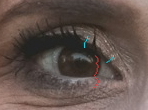
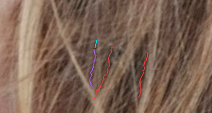
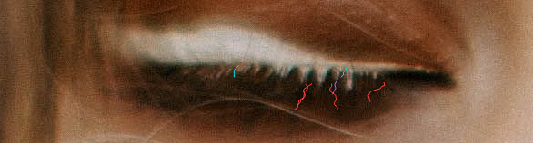
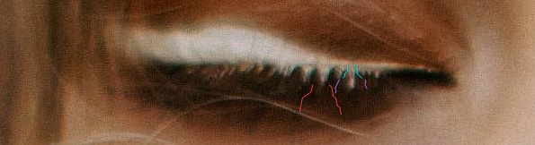
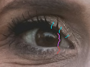
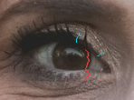
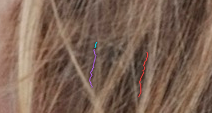
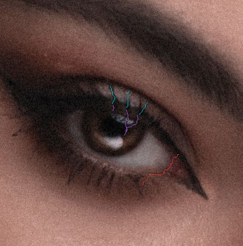
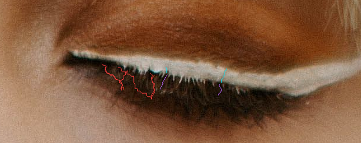
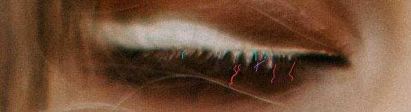

Root-continuation counterfactual: REJECTED Diagnostic overlays on unchanged native eye crops, no Length rendering. Cyan=previously eligible candidate, NOT a confirmed natural fiber or approved extension. Amber=observed crossing (none found here). Purple=root-chord continuation, red=existing whole-eye scanner paths. No observed crossing means UNRESOLVED, not safe. Last proximal path points may belong to broad merged eyelid support. See README and critic. Full sources/earlier effect comparisons remain in crossing-evidence and expanded-evidence.
Native zoom 100% 200% 400% chromium-light-older-chromium-control-right-both-arcs-t-1-n-1.png chromium-light-older-chromium-control-right-both-arcs-t1-n-1.png chromium-light-older-chromium-control-right-both-arcs-t1-n0.png 
chromium-light-older-chromium-control-right-both-arcs-t1-n1.png chromium-hair-occlusion-older-chromium-control-left-lower-only-t0-n-1.png 
chromium-pexels-7123010-closed-chromium-right-both-arcs-t0-n-1.png chromium-pexels-7123010-closed-chromium-right-both-arcs-t0-n0.png chromium-pexels-7123010-closed-chromium-right-both-arcs-t0-n1.png chromium-pexels-7123010-closed-chromium-right-both-arcs-t1-n1.png 
chromium-pexels-7123010-closed-webkit-right-both-arcs-t-1-n-1.png chromium-pexels-7123010-closed-webkit-right-both-arcs-t-1-n0.png chromium-pexels-7123010-closed-webkit-right-both-arcs-t-1-n1.png chromium-pexels-7123010-closed-webkit-right-both-arcs-t0-n-1.png 
chromium-pexels-7123010-closed-webkit-right-both-arcs-t0-n0.png chromium-pexels-7123010-closed-webkit-right-both-arcs-t1-n-1.png chromium-pexels-7123010-closed-webkit-right-both-arcs-t1-n1.png chromium-pexels-7123010-closed-webkit-right-lower-only-t0-n-1.png chromium-pexels-7123010-closed-webkit-right-lower-only-t0-n1.png webkit-light-older-chromium-control-right-both-arcs-t-1-n-1.png webkit-light-older-chromium-control-right-both-arcs-t-1-n0.png webkit-light-older-chromium-control-right-both-arcs-t0-n1.png 
webkit-light-older-chromium-control-right-both-arcs-t1-n-1.png webkit-light-older-chromium-control-right-both-arcs-t1-n0.png webkit-light-older-chromium-control-right-both-arcs-t1-n1.png 
webkit-hair-occlusion-older-chromium-control-left-lower-only-t0-n-1.png 
webkit-pexels-12367370-actual-webkit-right-both-arcs-t1-n0.png 
webkit-pexels-7123010-closed-chromium-left-lower-only-t0-n-1.png 
webkit-pexels-7123010-closed-chromium-right-both-arcs-t-1-n0.png webkit-pexels-7123010-closed-webkit-right-both-arcs-t1-n1.png 
webkit-pexels-7123010-closed-webkit-right-lower-only-t0-n-1.png